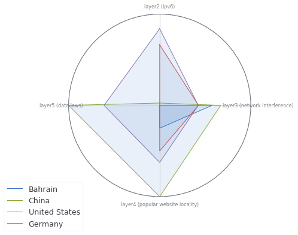
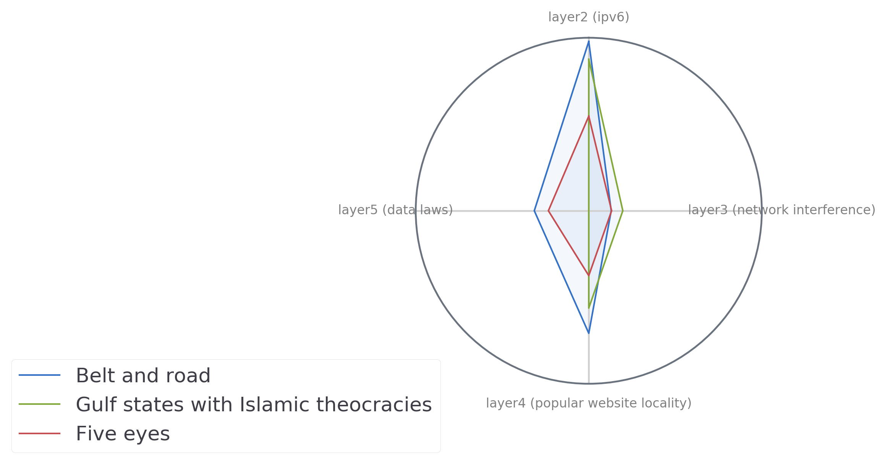

III: What have we learned?
We are using a fragmented (ha ha) version of the Network Interference metric for now, where we look at only website blocking events. We're running up against the usual troubles with big data, and I certainly expect to compute the full metric soon, but don't want to put undue pressure on my data discovery student as she figures things out. Our findings may change a bit as we compute the data, but my guess is that the major "so what" will remain. As such, I am labeling these findings ``initial.'' They are no longer ``preliminary,'' but they're not ``final,'' either.
1 Our main findings
1.1 The Internet is far from bi-polar
It's tempting to imagine a bi-polar Internet, with China on one, ``non-free'' side, and the West on the other. In this model, it would be tempting to place, for example, Bahrain on the China ``side.'' Germany might sit on the ``US side.''

Our metrics reveal a much more complex picture. In fact, all four countries mentioned here have much different profiles to one another. The Internet is likley multi-polar, with different Internet governance decisions producing diverse types of fragmentation.
1.2 ``Blocks'' are often self-similar
In spite of these surprises, our metrics do allow "profiles" of similar to emerge. Five eyes, Belt and Road, and even regions such as the Caribbean all show patterns that are similar to one another. Doing so allows us

Nevertheless, even within similar blocks, there are important differences to tease out: IPv6 adoption, content layer differences, and network interference all vary within otherwise "similar" countries, revealing unexpected differences. For example, the United States has XXXXXXXXXXXXXXX than its Five Eyes allies.
1.3 Countries you would expect to be similar can be different in some ways
1.4 Countries you would expect to be different are similar in some ways
2 TODO So what?
2.1 TODO What we can do with these findings?
2.2 What's next?
are countries interoperable with each other? for example, right now we look at how smilar content layer is to global, but what about argentina's content layer compared to chile's
this is the real ""clusters of internets" question
just calling them out may help them go away in any case, these clusters could become a key strategic planning tool for shifting between markets or for crafting policy
3 TODO Reflections
3.1 Am I convinced?
Currently, it's a little difficult to interpret these data outside of their specific meeting. For example, to me, IPv6 is a more immediate proxy of a country's "development" (another ambiguous term) than it is a proxy of "fragmentation."
Of all of the metrics, website locality convinces me the most. It's a measure of actual user behavior. I am sure network interference matters (and may matter more if we split it down by interference type), but ultimately, the experience of e.g., censorship may more acutely felt in the context of website locality (as is the case with China).
In general, behavioral measures may appear more at the content layer. I'm not sure that's a bad thing. The content layer shows us what people are, in practice, doing. Yes, maybe laws that restrict data flows matter, but can we observe that with actual behavior?
3.2 TODO What's in a name?
Really either interoperability or an index right now more like internet character profiles
we also assume that index is going to be the one thing that sells maybe, maybe not… maybe these indices are also appropriate.
3.3 TODO Future work
3.3.1 Expanding metrics per layer
In layer 4, we may be interested in DNS consistency as one measure of Internet-level fragmentation. DNS consistency has a clear relationship to the experience of browsing the Internet: what websites can you visit? It would be worth researching possible sources for this data.
In general, in the future, it's worth thinking about how we would deal with multiple metrics per layer. They don't fit neatly into our radar graph any more, and we may have to do some averaging per-layer to compute a composite metric. There's some art to this, I figure, and we should be mindful of that as we expand horizontally within TCP/IP layers.
3.3.2 UI wishlist
It would also be great to view metrics in greater detail on rollover. We certainly want our APIs to support that.